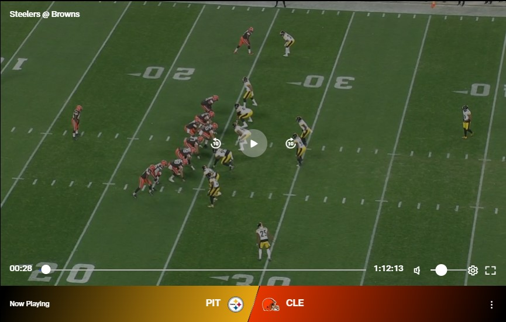
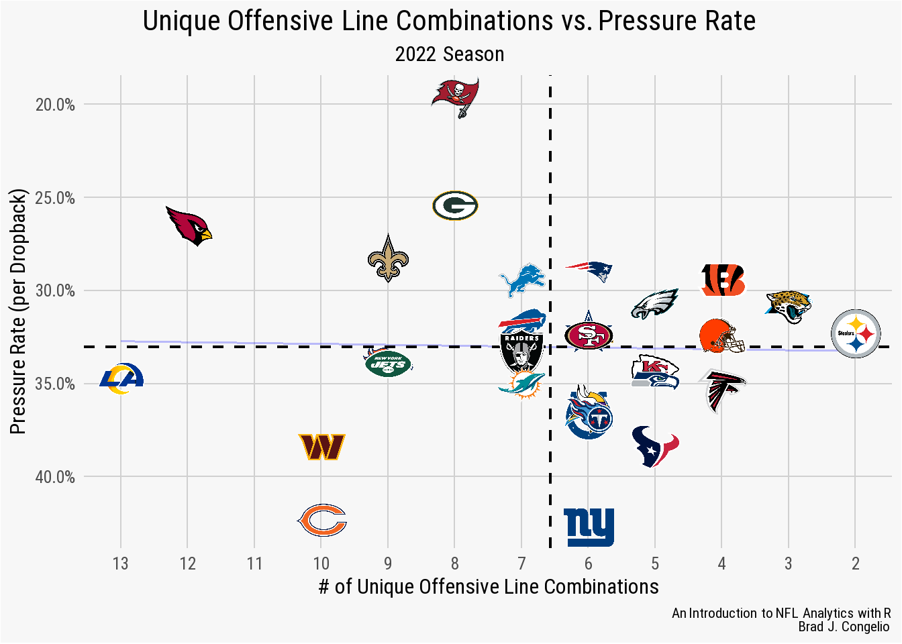
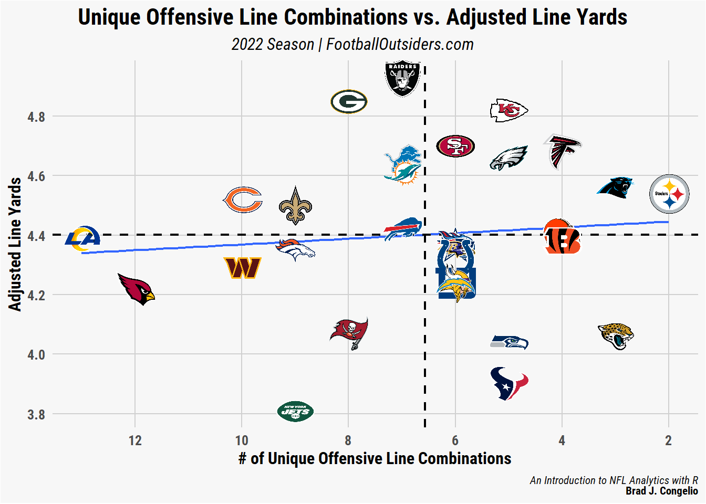
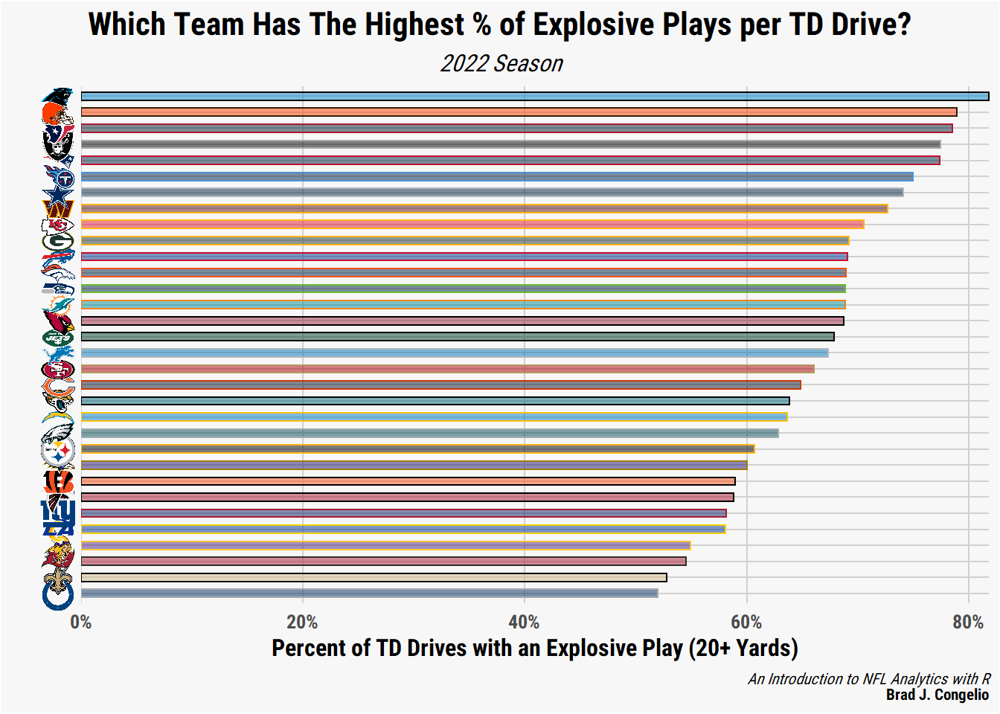

participation <- nflreadr::load_participation(2022, include_pbp = TRUE)
rosters <- nflreadr::load_rosters(2022) %>%
select(full_name, gsis_id, depth_chart_position)
oline_participation <- participation %>%
filter(play_type %in% c("pass", "run")) %>%
group_by(nflverse_game_id, possession_team, fixed_drive) %>%
filter(fixed_drive == 1 | fixed_drive == 2) %>%
filter(row_number() == 1) %>%
select(nflverse_game_id, play_id, possession_team,
offense_personnel, offense_players) %>%
dplyr::mutate(gsis_id = stringr::str_split(offense_players, ";")) %>%
tidyr::unnest(c(gsis_id)) %>%
left_join(rosters, by = c("gsis_id" = "gsis_id"))
oline_participation <- oline_participation %>%
filter(depth_chart_position %in% c("T", "G", "C")) %>%
group_by(nflverse_game_id, possession_team) %>%
mutate(starting_line = toString(full_name)) %>%
select(nflverse_game_id, possession_team,
offense_personnel, starting_line) %>%
distinct()1 An Introduction to NFL Analytics and the R Programming Language
1.1 Introduction
It might seem odd to begin an introductory book with coding and visualization in Chapter 1, while placing information about learning the basics of the tidyverse in a later chapter. But there is good reason for this pedagogical approach being utilized in this book. As explained by Hadley Wickham and Garrett Grolemund in their outstanding book R for Data Science, the process of reading in and then cleaning data is not exactly the most exciting part of doing analytics. As evidence suggest, early excitement about and integration into a topic increases the likelihood of following up and learning the “boring” material.
Because of this, I follow the approach of Wickham and Grolemund and provide data that is already, for the most part, “tidied” and ready to be used. We will however, in later chapters, pull raw data directly from its source (such as nflreadr, Pro Football Reference, and Sports Info Solutions) that requires manipulation and cleaning before any significant analysis can begin.
Important
I am assuming, while you may not have a full grasp of the tidyverse yet, that you do currently have base R and RStudio installed. If you do not, more detailed instructions are provided in Chapter 2. If you would rather jump right into this material, you can download base R and RStudio at the following links. Once both are installed, you can return to this point in the chapter to follow along.
To download/install base R: cran.rstudio.com
To download/install RStudio: RStudio Desktop (scroll to bottom of page for Mac options)
Moreover, as briefly outlined in the Preface, we move through the process of learning NFL analytics via a close relationship with investigative inquiry. In this instance, we will define the process of investigative inquiry as one that seeks both knowledge and information about a problem/question through data-based research. To that end, we will routinely use the process throughout this book to uncover insights, patterns, and trends relating to both players and teams that serve to help us answer the problem/question we are examining.
While it can - and should - be entertaining to develop visualization and models around arbitrarily picked statistics and metrics, it is important to remember that the end goal of the process is to glean useful insights that, ultimately, can be shared with the public. Much like the work done by a data analyst for a Fortune 500 company, the work you produce as a result of this book should do two things: (1.) provide deeper insight and knowledge about NFL teams and players and (2.) effectively communicate a story.
This is why the process of investigative inquiry is ingrained, as much as possible, into every example provided in the coming chapters. In doing so, the standard outline for completing an investigate inquiry is modified to fit the needs of this book - specifically, the addition of communicating your findings to the public at the end.
1.2 The Investigate Inquiry Outline
Identify the problem or question. The first step in any investigative inquiry is to clearly define the problem or question that you are trying to answer. Many times, fans have questions about their individuals favorite team and/or players. For example, the 2022 Los Angeles Rams - the defending Super Bowl Champions - were eliminated from playoff contention with three weeks remaining in the season. With the early exit, the Rams tied the 1999 Denver Broncos for the earliest elimination from playoff contention for any prior Super Bowl Champion. The Rams’ early elimination can be explained by the high number of injuries during the season, including Matthew Stafford, Cooper Kupp, and Aaron Donald. However, another factor that was routinely discussed during the season, was the team’s inability to keep offensive linemen healthy. In this specific example, in terms of identifying the problem or question, a potential problem or question to explore is: how many unique combinations of offensive linemen did the 2022 LA Rams use and what sort of impact did this have on the team’s playmaking ability? Have other teams in recent history faced the same amount of offensive line turnover yet still make the playoffs? As you can see, there are a number of different avenues in which the problem or question surrounding the Rams’ offensive line injury issues can be explored.
Gather data. With a question or problem determined, we now turn to the process of finding and gathering the necessary data to find answers. Unfortunately, data is not always going to be available to answer your investigate inquiry. For example, the NFL’s tracking data is only released in partial form during the annual Big Data Bowl. In the event that your question or problem requires data that is not available, you must loop back to Step 1 and reconfigure your question to match available data. In the case of the 2022 LA Rams’ offensive line, access to data that can answer the question is available through two cores avenues: the
load_participation()andload_snap_counts()functions within thenflversefamily of packages.Clean and prepare the data. It is not often that the data you obtain to answer your question will be perfectly prepared for immediate analysis. As will be explored below, the data collected to explore the Rams’ offensive line combinations required both (1.) a critical thought process on how to best solve oddities in the data while still producing reliable information and (2.) cleaning and preparation to make the changes as a result of that critical thinking process. As you progress through the many examples and exercises in this book, you will often be presented with prepared data sets that require you to determine the best approach to data manipulation through this critical thinking and cleaning/preparation process.
Analyze the data. After problem solving to ensure the data is as reliable and consistent as possible, we can turn to analyzing the data. In this case, since we are concerned with unique combinations of offensive linemen, we can quickly get results by using the
n_distinct()function withindplyr.-
Visualize the data. There are generally two options for visualizing data: plotting with
ggplot()or creating a table withgtand the outstanding companion packagegtExtras. Considering the following can help determine whether to present your findings in chart or table format.The type of data you are working with. If you have a large amount of numerical data that needs to be compared or analyzed, a table may be the most effective way to present this information. On the other hand, if you want to highlight trends or patterns in your data, a chart can help illustrate the information in a more clear manner.
The purpose of your visualization. You must consider what you ultimately want to communicate with your visualization. If you want to provide a detailed breakdown of your data, a table is usually more appropriate. However, if you want to show the overall trend or pattern in your data, a chart is going to be more effective.
The audience for your visualization. As you determine whether to use a chart or a table, think about who will be viewing your visualization and what level of detail they need. If your audience is familiar with the data and needs to see precise values, a table may be a better choice. If your audience is not as familiar with the data and you want to highlight the main trends or patterns, a chart my be more effective.
Interpret and communicate the results. Lastly, it is time to communicate your results to the public. Whether this be through Twitter, a team blog, or a message board, there are numerous items to consider when preparing to build your story/narrative for sharing. This will be covered further in Chapter 4 as well.
With a clear direction via the investigative inquiry process, we can turn to taking a deeper dive into the LA Rams’ 2022 offensive linemen issue.
1.3 Investigating the Rams’ 2022 Offensive Line
The “Super Bowl hangover” is real.
At least for the loser of the big game.
Since the AFL and NFL merged in 1970, a total of 15 of the 51 losers of the Super Bowl went on to miss the playoffs the following season, while 13 failed to even achieve a winning record. Teams coming off a Super Bowl victory have generally fared better, with the winners putting together a .500 record or better 45 out of 51 times.
Of those six teams to not achieve a .500 record after winning the Super Bowl, only a few have been as downright terrible as the 2022 Los Angeles Rams.
As explained by Mike Ehrmann, the Rams’ poor Super Bowl defense is “what happens when a laundry list of things go wildly wrong at the same time” (Kirschner, 2022). As outlined above in our investigative inquiry outline, one of the core items on the Rams’ laundry list of bad luck was the absurd amount of offensive linemen ending up on the injured list. This, combined with losing Andrew Whitworth to retirement after the Super Bowl, led to quarterback Matthew Stafford being sacked on 8.6-percent of his dropback attempts (a rate that nearly doubled from the previous season).
Given that context, just how historically bad was the Rams’ 2022 offensive line turnover? We can being diving into the data to find our results and build our story.
1.3.1 Unique Offensive Line Combinations: How to Collect The Data?
To begin obtaining and preparing the data to determine the number of unique offensive line combinations the Rams had in the 2022 season, we turn to two possible options: the load_participation() and load_snap_counts() functions within the nflreadr package. The load_participation() function will return, if include_pbp = TRUE, a list of every player ID number that was on the field for each play, whereas load_snap_counts() returns - on a per game basis - the percentage of snaps each player was on the field for.
In the end, using load_snap_counts() creates the most accurate, reliable, and straightforward way in each to collect unique offensive line combinations. The load_participation() function results in several oddities in the data (not with the collection of it by the nflverse maintainers, but with individual NFL team strategies and formations). To highlight this, the following code selects the first offensive play for each team, in each game, of the 2022 season.
While the output using the load_participation() function is correct, a quick examination of the offense_personnel column causes concern about the viability of this approach to calculate the total number of unique offensive line combinations. A grouping and summing of the offense_personnel column highlights the issue.
oline_participation %>%
group_by(offense_personnel) %>%
summarize(total = n())# A tibble: 14 x 2
offense_personnel total
<chr> <int>
1 1 RB, 0 TE, 4 WR 4
2 1 RB, 1 TE, 3 WR 240
3 1 RB, 2 TE, 2 WR 171
4 1 RB, 3 TE, 1 WR 19
5 2 QB, 1 RB, 1 TE, 2 WR 4
6 2 RB, 0 TE, 3 WR 1
7 2 RB, 1 TE, 2 WR 89
8 2 RB, 2 TE, 1 WR 14
9 3 RB, 1 TE, 1 WR 1
10 6 OL, 1 RB, 0 TE, 3 WR 2
11 6 OL, 1 RB, 1 TE, 2 WR 12
12 6 OL, 1 RB, 2 TE, 1 WR 1
13 6 OL, 2 RB, 0 TE, 2 WR 1
14 7 OL, 0 RB, 0 TE, 0 WR,1 P,1 LS,1 DL,1 K 1oline_participation# A tibble: 560 x 4
# Groups: nflverse_game_id, possession_team [557]
nflverse_game_id possession_team offense_personnel starting_line
<chr> <chr> <chr> <chr>
1 2022_01_BAL_NYJ NYJ 1 RB, 2 TE, 2 WR George Fant, Al~
2 2022_01_BAL_NYJ BAL 2 RB, 1 TE, 2 WR Ben Powers, Mor~
3 2022_01_BUF_LA BUF 1 RB, 1 TE, 3 WR Ryan Bates, Dio~
4 2022_01_BUF_LA LA 1 RB, 1 TE, 3 WR Rob Havenstein,~
5 2022_01_CLE_CAR CAR 1 RB, 1 TE, 3 WR Ikem Ekwonu, Ta~
6 2022_01_CLE_CAR CLE 1 RB, 1 TE, 3 WR Jedrick Wills, ~
7 2022_01_DEN_SEA SEA 1 RB, 2 TE, 2 WR Phil Haynes, Ab~
8 2022_01_DEN_SEA DEN 1 RB, 2 TE, 2 WR Garett Bolles, ~
9 2022_01_GB_MIN MIN 1 RB, 1 TE, 3 WR Christian Darri~
10 2022_01_GB_MIN GB 1 RB, 2 TE, 2 WR Royce Newman, J~
# i 550 more rowsOf concern are rows 10 through 14. In 15 different cases, a team ran its first play of the game with six offensive linemen. And, in one case, the resulting data indicates that the Dallas Cowboys ran their first play in week 5 against the LA Rams with seven offensive linemen, one punter, one long snapper, and a kicker.
In the first case, the data is correct that the teams ran their first offensive play with six offensive linemen. For example, in its week 3 game against the Steelers, the data list the Cleveland Browns as having started Jack Conklin (tackle), Jedrick Wills Jr. (tackle), Joel Bitonio (guard), Michael Dunn (guard), Wyatt Teller (guard), and Ethan Pocic (center). Viewing the NFL’s All-22 film of this specific play confirms that, indeed, all six offensive linemen were on the field for the Browns’ first snap of the game.

In the second case, Dallas’ offense personnel on its “first play” from scrimmage is the result of the Cowboys returning a fumble for a touchdown on the Rams’ first offensive possession with a botched snap on the ensuing extra point attempt. Because of that, the extra point attempt is no longer scored as an extra_point in the play_type variable within the play-by-play data, but a rushing attempt. As a result of this oddity, the data is correct in listing Dallas’ first offensive play as coming out of an extra point personnel grouping.
Both of these examples are problematic as a team’s “starting offensive line” is considered to be just five players: the left tackle, the left guard, the center, the right guard, and the right tackle. In order to correctly determine the number of combinations used, we need to first determine the five most-commonly used offensive linemen for each team. Because of the off-the-wall situations that can occur in football, building offensive line combinations through personnel groupings in the play-by–play data is tricky, at best.
To avoid these situations, we can turn to the load_snap_counts() function with the nflreadr package to determine the number of unique offensive line combinations. The process to do so occurs over several steps and involves decision-making on our end on how best to accurately represent the five core offensive linemen for each team.
oline_snap_counts <- nflreadr::load_snap_counts(seasons = 2022)
oline_snap_counts <- oline_snap_counts %>%
select(game_id, week, player, position, team, offense_pct) %>%
filter(position %in% c("T", "G", "C")) %>%
group_by(game_id, team) %>%
arrange(-offense_pct) %>%
dplyr::slice(1:5) %>%
ungroup()
oline_snap_counts# A tibble: 2,840 x 6
game_id week player position team offense_pct
<chr> <int> <chr> <chr> <chr> <dbl>
1 2022_01_BAL_NYJ 1 Ben Powers G BAL 1
2 2022_01_BAL_NYJ 1 Morgan Moses T BAL 1
3 2022_01_BAL_NYJ 1 Kevin Zeitler G BAL 1
4 2022_01_BAL_NYJ 1 Tyler Linderbaum C BAL 1
5 2022_01_BAL_NYJ 1 Patrick Mekari G BAL 0.57
6 2022_01_BAL_NYJ 1 Max Mitchell T NYJ 1
7 2022_01_BAL_NYJ 1 Laken Tomlinson G NYJ 1
8 2022_01_BAL_NYJ 1 Alijah Vera-Tucker G NYJ 1
9 2022_01_BAL_NYJ 1 George Fant T NYJ 1
10 2022_01_BAL_NYJ 1 Connor McGovern C NYJ 1
# i 2,830 more rowsFirst, we obtain snap count data from the 2022 season and write it into a data frame titled oline_snap_counts. After, we select just the necessary columns and then filter out the position information to include only tackles, guards, and centers. After grouping each individual offensive line by game_id and his respective team, we arrange each player’s snap count in descending order using offense_pct.
And this is where a decision needs to be made on how to best construct the five starting offensive linemen for each team. By including slice(1:5), we are essentially selecting just the five offensive linemen with the most snap counts in that singular game.
Are these five players necessarily the same five that started the game as the two tackles, two guards, and one center? Perhaps not. But, hypothetically, a team’s starting center could have been injured a series or two into the game and the second-string center played the bulk of the snaps in that game.
Because of such situations, we can make the argument that the five offensive line players with the highest percentage of snap counts for each unique game_id are to be considered the combination of players used most often in that game.
Next, let’s make the decision to arrange each team’s offensive line, by game, in alphabetical order. Since we do not have a reliable way to include specific offensive line positions (that is, we have just tackle instead of left tackle or right tackle), we can build our combination numbers strictly based on the five downed linemen, regardless of specific position on the line of scrimmage.
After, we use the toString() function to place all five names into a single column (starting_line) and then filter out the data to include just one game_id for the linemen.
oline_snap_counts <- oline_snap_counts %>%
group_by(game_id, team) %>%
arrange(player, .by_group = TRUE)
oline_final_data <- oline_snap_counts %>%
group_by(game_id, week, team) %>%
mutate(starting_line = toString(player)) %>%
select(game_id, week, team, starting_line) %>%
distinct(game_id, .keep_all = TRUE)The end result includes the game_id, the week, the team abbreviation, and the starting_line column that includes the names of the five offensive line players with the highest snap count percentage for that specific game.
# A tibble: 568 x 4
# Groups: game_id, week, team [568]
game_id week team starting_line
<chr> <int> <chr> <chr>
1 2022_01_BAL_NYJ 1 BAL Ben Powers, Kevin Zeitler, Morgan Mose~
2 2022_01_BAL_NYJ 1 NYJ Alijah Vera-Tucker, Connor McGovern, G~
3 2022_01_BUF_LA 1 BUF Dion Dawkins, Mitch Morse, Rodger Saff~
4 2022_01_BUF_LA 1 LA Brian Allen, Coleman Shelton, David Ed~
5 2022_01_CLE_CAR 1 CAR Austin Corbett, Brady Christensen, Ike~
6 2022_01_CLE_CAR 1 CLE Ethan Pocic, James Hudson, Jedrick Wil~
7 2022_01_DEN_SEA 1 DEN Cameron Fleming, Dalton Risner, Garett~
8 2022_01_DEN_SEA 1 SEA Abraham Lucas, Austin Blythe, Charles ~
9 2022_01_GB_MIN 1 GB Jake Hanson, Jon Runyan, Josh Myers, R~
10 2022_01_GB_MIN 1 MIN Brian O'Neill, Christian Darrisaw, Ed ~
# i 558 more rowsWith the data cleaned and prepared, we are now able to take our first look at the results. In the code below, we are grouping by all 32 NFL team and then summarizing the total number of unique offensive line combinations used during the 2022 regular season.
total_combos <- oline_final_data %>%
group_by(team) %>%
summarize(combos = n_distinct(starting_line)) %>%
arrange(-combos)Despite much of the media focus being on the Rams’ poor performance, given their title of defending Super Bowl Champions, the Arizona Cardinals had nearly as many unique offensive line combinations at the conclusion of the season.
With the data cleaned and prepared, let’s use it to create a ggplot graph and compare the relationship between a team’s number of unique offensive lines against its winning percentage. To complete this, we first need to join the winning percentages to our existing total_combos data frame.
1.3.2 Unique Offensive Line Combinations vs. Win Percentage
To bring in the individual winning percentages, we will use the get_nfl_standings() function from espnscrapeR and then combine the two sets of data on team abbreviations via a left_join(). Unfortunately, the team abbreviation returned from espnscrapeR does not match up with those used in the nflverse for both the Los Angeles Rams and the Washington Commanders (LAR vs. LA and WSH vs. WAS). As evidenced in the below code, correcting this issue is simple with the clean_team_abbrs() function in the nflreadr package.
records <- espnscrapeR::get_nfl_standings(season = 2022) %>%
select(team_abb, win_pct)
records$team_abb <- nflreadr::clean_team_abbrs(records$team_abb)
total_combos <- total_combos %>%
left_join(records, by = c("team" = "team_abb"))
total_combos# A tibble: 32 x 3
team combos win_pct
<chr> <int> <dbl>
1 LA 13 0.294
2 ARI 12 0.235
3 CHI 10 0.176
4 WAS 10 0.5
5 DEN 9 0.294
6 NO 9 0.412
7 NYJ 9 0.412
8 GB 8 0.471
9 TB 8 0.471
10 BUF 7 0.812
# i 22 more rowsAfter collecting team records and merging them into the offensive line combination data, we can use ggplot to visualize the data. Individual team logos are used in place of the typical geom_point by using the nflplotR package.
Important
Please note in the below ggplot() coding that we are using a custom theme, nfl_analytics_theme(). If you wish to replicate the below visualization using the theme, run the below code to place the theme into your RStudio environment allowing you to call it within ggplot. Be sure to install and run the ggtext package as the theme uses the package’s element_markdown() function.
nfl_analytics_theme <- function(..., base_size = 12) {
theme(
text = element_text(family = "Roboto",
size = base_size,
color = "black"),
axis.ticks = element_blank(),
axis.title = element_text(face = "bold"),
axis.text = element_text(face = "bold"),
plot.title.position = "plot",
plot.title = element_markdown(size = 16,
vjust = .02,
hjust = 0.5),
plot.subtitle = element_markdown(hjust = 0.5),
plot.caption = element_markdown(size = 8),
panel.grid.minor = element_blank(),
panel.grid.major = element_line(color = "#d0d0d0"),
panel.background = element_rect(fill = "#f7f7f7"),
plot.background = element_rect(fill = "#f7f7f7"),
panel.border = element_blank(),
legend.background = element_rect(color = "#F7F7F7"),
legend.key = element_rect(color = "#F7F7F7"),
legend.title = element_text(face = "bold"),
legend.title.align = 0.5,
strip.text = element_text(face = "bold"))
}ggplot(data = total_combos, aes(x = combos, y = win_pct)) +
geom_line(stat = "smooth", method = "lm",
linewidth = .7, color = "blue",
alpha = 0.25) +
nflplotR::geom_mean_lines(aes(x0 = combos, y0 = win_pct),
color = "black", size = .8) +
nflplotR::geom_nfl_logos(aes(team_abbr = team), width = 0.065) +
nfl_analytics_theme() +
scale_x_reverse(breaks = scales::pretty_breaks(n = 12)) +
scale_y_continuous(breaks = scales::pretty_breaks(n = 6),
labels = scales::label_number(accuracy = 0.001)) +
xlab("# of Unique Offensive Line Combinations") +
ylab("Win Percentage") +
labs(title = "**Unique Offensive Line Combinations vs. Win Percentage**",
subtitle = "*Through Week #15*",
caption = "*An Introduction to NFL Analytics with R*<br>
**Brad J. Congelio**")
As can be seen in the resulting graph - which shows little, if any, statistical correlation - there are still teams with worse records than the Rams and Cardinals that have fewer unique offensive line combinations (the Houston Texans and the Chicago Bears, for example). Perhaps there is a metric that correlates more strongly with a team’s number of offensive line combinations?
To begin exploring that, we can hypothesize that more offensive line combinations leads to more quarterback pressures as the various member of the offensive line never have time to properly “gel.”
1.3.3 Unique Offensive Line Combinations vs. Pressure Rate
Rather than calculate the data ourselves (which is the total number dropbacks divided by the total number of pressures), we can turn away from nflverse data and retrieve the information from the SIS Data Hub. After downloading the spreadsheet, we can read it into the RStudio environment using vroom and then merge the information into the existing total_combos data frame by matching on the individual team abbreviations.
pressure_rate <- vroom("http://nfl-book.bradcongelio.com/pressure-rate")
teams <- nflreadr::load_teams() %>%
select(team_abbr, team_nick)
pressure_rate <- pressure_rate %>%
left_join(teams, by = c("team" = "team_nick"))
total_combos <- total_combos %>%
left_join(pressure_rate, by = c("team" = "team_abbr"))# A tibble: 32 x 6
team combos win_pct season team.y pressure_percent
<chr> <int> <dbl> <dbl> <chr> <dbl>
1 LA 13 0.294 2022 Rams 34.7
2 ARI 12 0.235 2022 Cardinals 26.5
3 CHI 10 0.176 2022 Bears 42.3
4 WAS 10 0.5 2022 Commanders 38.4
5 DEN 9 0.294 2022 Broncos 33.8
6 NO 9 0.412 2022 Saints 28.2
7 NYJ 9 0.412 2022 Jets 33.9
8 GB 8 0.471 2022 Packers 25.4
9 TB 8 0.471 2022 Buccaneers 19.6
10 BUF 7 0.812 2022 Bills 31.8
# i 22 more rowsWith the pressure rate now merged with our unique offensive line combination data, we can make slight adjustments to our prior ggplot code to examine any potential relationship.
ggplot(data = total_combos, aes(x = combos, y = pressure_percent)) +
geom_line(stat = "smooth", method = "lm",
size = .7, color = "blue",
alpha = 0.25) +
nflplotR::geom_mean_lines(aes(x0 = combos, y0 = pressure_percent),
color = "black", size = .8) +
nflplotR::geom_nfl_logos(aes(team_abbr = team), width = 0.065) +
scale_x_reverse(breaks = scales::pretty_breaks(n = 12)) +
scale_y_reverse(breaks = scales::pretty_breaks(n = 6),
labels = scales::percent_format(scale = 1,
accuracy = 0.1)) +
nfl_analytics_theme() +
xlab("# of Unique Offensive Line Combinations") +
ylab("Pressure Rate (per Dropback)") +
labs(title = "**Unique Offensive Line Combinations vs. Pressure Rate**",
subtitle = "*2022 Season*",
caption = "*An Introduction to NFL Analytics with R*<br>
**Brad J. Congelio**")
Again, there does not seem to be any statistical correlation between a team’s number of unique offensive line combinations and the pressure rate per dropback allowed. Rather than examining the pressure per dropback rate, perhaps there is a correlation between the number of unique offensive line combinations and the total number of quarterback hits allowed through the season? To determine the validity of that hypothesis, we can use data from nflreadr to collect total QB hits.
1.3.4 Unique Offensive Line Combinations vs. QB Hits Allowed
To begin, we can collect the QB hit data from nflreadr being sure to group_by() the posteam variable in order to calculate the number of QB hits allowed by each team’s offensive line. After, we can merge the data into the total_combos data frame and produce the plot.
After first filtering out any data that does not include posteam information, we can group_by() each individual offensive unit and then calculate the total sum of QB hits for each.
ggplot(data = qb_hits_combined, aes(x = combos, y = total_qb_hits)) +
geom_line(stat = "smooth", method = "lm",
size = .7, color = "blue",
alpha = 0.25) +
nflplotR::geom_mean_lines(aes(x0 = combos, y0 = total_qb_hits),
color = "black", size = .8) +
nflplotR::geom_nfl_logos(aes(team_abbr = team), width = 0.065) +
scale_x_reverse(breaks = scales::pretty_breaks()) +
scale_y_reverse(breaks = scales::pretty_breaks()) +
nfl_analytics_theme() +
xlab("# of Unique Offensive Line Combinations") +
ylab("Total QB Hits Allowed") +
labs(title = "Unique Offensive Line Combinations vs. QB Hits Allowed",
subtitle = "2022 Season",
caption = "*An Introduction to NFL Analytics with R*<br>
**Brad J. Congelio**")
There is again very little, if any, correlation between a team’s unique number of offensive line combinations and the number of times its quarterback is hit on passing attempts.
1.3.5 Unique Offensive Line Combinations vs. Adjusted Sack Rate
In the previous examples, both pressure rate and QB hits are unadjusted metrics, meaning the results are not manipulated to account for context within the data. To add an example of a metric that is adjusted to our list of examples, we will use Adjusted Sack Rate from Football Outsiders. Aaron Schatz, in an article introducing the measurements in December of 2003, explained his findings that the league-wide sack rate varied based on both the down and yards to go.
| YARDS TO GO | 1-4 | 5-8 | 9-12 | 13-16 | >17 |
| 1st Down | 1.5% | 5.4% | 4.8% | 3.3% | 5.6% |
| 2nd Down | 5.6% | 4.7% | 5.0% | 6.1% | 4.5% |
| 3rd/4th Down | 5.9% | 8.2% | 10.5% | 7.6% | 11.1% |
As a result of this, Schatz designed Adjusted Sack Rate which accounts for the number of pass attempts, down, distance, and - importantly - the team’s opponent. We can plot the Adjusted Sack Rate for each team from the 2022 season against the unique number of offensive line combinations.
adjusted_sack_rate <- vroom("http://nfl-book.bradcongelio.com/adj-sack-rate")adjusted_sack_rate %>%
filter(season == 2022) %>%
ggplot(aes(x = combos, y = adj_sack_rate)) +
geom_line(stat = "smooth", method = "lm",
size = .7,
color = "blue",
alpha = 0.25) +
nflplotR::geom_mean_lines(aes(x0 = combos, y0 = adj_sack_rate),
color = "black", size = .8) +
nflplotR::geom_nfl_logos(aes(team_abbr = team), width = 0.065) +
scale_x_reverse(breaks = scales::pretty_breaks()) +
scale_y_reverse(breaks = scales::pretty_breaks(),
labels = scales::percent_format(scale = 1)) +
xlab("# of Unique Offensive Line Combinations") +
ylab("Adjusted Sack Rate") +
labs(title = "**Unique Offensive Line Combinations vs.
Adjusted Sack Rate**",
subtitle = "*2022 Season*",
caption = "*An Introduction to NFL Analytics with R*<br>
**Brad J. Congelio**") +
nfl_analytics_theme()
The graph shows that, in general, those teams with higher numbers of unique offensive line combinations trend towards the lower-left quadrant and some - the Rams and Bears - are significantly below the league average, indicating a worse adjusted sack rate (with the Arizona Cardinals being an outlier). Compared to the prior metrics (pressure rate and QB hits), it seems that adjusted sack rate may be impacted by the consistency of a team’s offensive linemen.
Using the adjusted_sack_rate data, we can easily visualize the same results over the last three NFL seasons to see if there is any consistency between the offensive line combinations and a team’s adjusted sack rate.
adjusted_sack_rate %>%
ggplot(aes(x = combos, y = adj_sack_rate)) +
geom_line(stat = "smooth", method = "lm",
size = .7,
color = "blue",
alpha = 0.25) +
nflplotR::geom_mean_lines(aes(x0 = combos, y0 = adj_sack_rate),
color = "black", size = .8) +
nflplotR::geom_nfl_logos(aes(team_abbr = team), width = 0.065) +
scale_x_reverse(breaks = scales::pretty_breaks()) +
scale_y_reverse(breaks = scales::pretty_breaks(),
labels = scales::percent_format(scale = 1)) +
xlab("# of Unique Offensive Line Combinations") +
ylab("Adjusted Sack Rate") +
labs(title = "**Unique Offensive Line Combinations vs.
Adjusted Sack Rate**",
subtitle = "*2020 - 2022 Seasons*",
caption = "*An Introduction to NFL Analytics with R*<br>
**Brad J. Congelio**") +
nfl_analytics_theme() +
facet_wrap(~season, nrow = 2)
Given the result of just the 2022 season, the output for the 2021 season remains consistent, perhaps even more so with less spread from the line of best fit. In 2021, the Carolina Panthers had the most unique offensive line combinations as well as one of the worst adjusted sack rates in the league, while those teams with fewer combinations generally trend towards the upper-right quadrant of the plot.
However, the consistency between the 2022 and 2021 seasons is not found in the 2020 season. The Philadelphia Eagles had the most unique combinations in 2020 (13 in total), but were all but tied with the Houston Texans for worst adjusted sack rate (9.4% to 9.5%). Moreover, the Pittsburgh Steelers, Buffalo Bills, and Indianapolis Colts - despite all having more than 10 unique offensive line combinations - are among the best in adjusted sack rate.
Why is there this sudden departure from the consistency in 2022 and 2021?
The answer is within the context of data, in that Ben Roethlisberger - the long-time quarterback for the Steelers - had one of the fastest Time to Throw scores in modern NFL history, getting rid of the ball, on average, in just 2.19 seconds after the snap. Philip Rivers, of the Colts, was nearly as quick to release the ball with an average of 2.39 seconds. It proved to be quite difficult for opposing defenses to get to either Roethlisberger or Rivers given these incredibly quick snap-to-release times.
It should be noted that the same contextual explanation does not hold true for Buffalo. In the 2020 season, Josh Allen released the ball, on average, 3.04 seconds after the snap which is plenty of time for the opposing defense to generate pressure and record sacks. Because of this, if we were to add statistical weight using average time to throw, the Buffalo Bills would remain an outlier in this specific season while both the Steelers and Colts would likely regress closer to the mean for those teams with higher numbers of offensive line combinations.
While pressure rate and QB hits did not prove to impacted by a team’s number of line combinations, there is a broad relationship (though not strong enough to begin using the term “correlation”) between the number of combinations and adjusted sack rate.
To continue this exploration, let’s pivot away from exploring the impact of offensive line combinations on the quarterback and examine any potential correlation with the running game and run blocking, while using metrics that are adjusted, as the additional context and weighting seemed to be helpful in finding relationships. We can gather statistics provided by Football Outsiders concerning the performance of offensive lines.
1.3.6 Unique Offensive Line Combinations vs. Adjusted Line Yards
- Adjusted Line Yards - derived by Football Outsiders with a regression analysis, this metric takes the total of a team’s total rushing attempts and assigns a quantitative value to the offensive line’s impact. Any run that ends with a loss of yards results in 120% of the value being placed on the offensive line, while a 0-4 yard rush is 100%, a 5-10 yard rush is 50%, and anything over 11 yards is a 0% value. As explained by Football Outsiders, if a running back breaks free for a 50-yard gain, just how much of that is the offensive line responsible for? Adjusted Line Yards produces a numeric value as the answer to that question.
- Power Rank - a ranking between 1 (best) and 32 (worst), power rank is the result of the power success metric, which is the percentage of rushing attempts on 3rd or 4th down, with two or less yards to go, that resulted in either a 1st down or a touchdown.
- Stuffed Rank - again provided in the data frame as a ranking between 1 and 32, stuffed rank is the percentage of rushing attempts where the running back was tackled at, or behind, the line of scrimmage.
To begin, we can gather the necessary data into a data frame called fb_outsiders_oline.
fb_outsiders_oline <- vroom("http://nfl-book.bradcongelio.com/fbo_oline")
fb_outsiders_oline# A tibble: 32 x 5
team combos adj_line_yards power_rank stuffed_rank
<chr> <dbl> <dbl> <dbl> <dbl>
1 LV 7 4.93 23 6
2 GB 8 4.85 18 2
3 KC 5 4.82 31 9
4 SF 6 4.7 26 22
5 ATL 4 4.68 17 5
6 PHI 5 4.66 7 7
7 DET 7 4.66 20 18
8 MIA 7 4.61 30 14
9 CAR 3 4.56 14 11
10 PIT 2 4.54 1 4
# i 22 more rowsYou can see in the output of the data that power_rank and stuffed_rank are both in a “ranked format,” meaning the team with the best power success score (the Pittsburgh Steelers) are ranked 1st while the team with the worst (the Minnesota Vikings) are ranked 32nd. The adj_line_yards variable is provided in its unranked, raw format. Because of this, let’s first use both power_rank and stuffed_rank and use the cowplot package to view them together, and then construct the plot for adj_line_yards separately since it operates on a differing y-axis scale.
power_rank_plot <- ggplot(fb_outsiders_oline,
aes(x = combos, y = power_rank)) +
nflplotR::geom_mean_lines(aes(x0 = combos,
y0 = power_rank),
color = "black",
size = .8) +
nflplotR::geom_nfl_logos(aes(team_abbr = team), width = 0.065) +
scale_x_reverse(breaks = scales::pretty_breaks()) +
scale_y_reverse(breaks = seq(1, 32, 2)) +
labs(title = "**Unique Offensive Line Combinations vs.
Power Ranking**",
subtitle = "*2022 Season | FootballOutsiders.com*") +
xlab("# of Unique Offensive Line Combinations") +
ylab("Power Ranking (1 = best, 32 = worst)") +
nfl_analytics_theme()
stuffed_rank_plot <- ggplot(fb_outsiders_oline,
aes(x = combos, y = stuffed_rank)) +
geom_smooth(method = "lm", se = FALSE, size = 0.8, alpha = .08) +
nflplotR::geom_mean_lines(aes(x0 = combos,
y0 = stuffed_rank),
color = "black",
size = .8) +
nflplotR::geom_nfl_logos(aes(team_abbr = team), width = 0.065) +
scale_x_reverse(breaks = scales::pretty_breaks()) +
scale_y_reverse(breaks = seq(1, 32, 2)) +
labs(title = "**Unique Offensive Line Combinations vs.
Stuffed Rank**",
subtitle = "*2022 Season | FootballOutsiders.com*")+
xlab("# of Unique Offensive Line Combinations") +
ylab("Stuffed Ranking (1 = best, 32 = worst)") +
nfl_analytics_theme()
plot_grid(power_rank_plot, stuffed_rank_plot, ncol = 1)
Based on the results, it does not seem that the number of unique offensive line combinations has impact on either power rank or stuffed rank. The Los Angeles Rams and Arizona Cardinals, despite have the two highest unique line combinations, are among the best in the league in the metric. In fact, the opposite seems to be true in that the Minnesota Vikings, with just six unique line combinations during the 2022 season, are last in the league in power ranking. The Rams performed in bit worse when comparing line combinations to stuffed rank, but the Cardinals are still among the best in the league. The Vikings again are at the bottom, only under performed by the Jacksonville Jaguars (who had just three unique combinations throughout the season).
ggplot(fb_outsiders_oline, aes(x = combos, y = adj_line_yards)) +
geom_smooth(method = "lm", se = FALSE, size = 0.8, alpha = .08) +
nflplotR::geom_mean_lines(aes(x0 = combos, y0 = adj_line_yards),
color = "black", size = .8) +
nflplotR::geom_nfl_logos(aes(team_abbr = team), width = 0.065) +
scale_x_reverse(breaks = scales::pretty_breaks()) +
scale_y_continuous(breaks = scales::pretty_breaks()) +
labs(title = "**Unique Offensive Line Combinations vs.
Adjusted Line Yards**",
subtitle = "*2022 Season | FootballOutsiders.com*",
caption = "*An Introduction to NFL Analytics with R*<br>
**Brad J. Congelio**") +
xlab("# of Unique Offensive Line Combinations") +
ylab("Adjusted Line Yards") +
nfl_analytics_theme()
Comparing a team’s unique offensive line combinations to adjusted line yards is more promising than power and stuffed rank, as the teams with the highest amount of combinations begin to fall under the league-average line for ALY. There are still several teams that, despite having a low number of combinations through the season, performed poorly such as the Houston Texans, Seattle Seahawks, and the Jaguars.
So what do we make of this?
Given that adjusted line yards is constructed to measure the responsibility of the offensive line, it is logical to also want to consider the “performance” of the running back. A running back that is able to avoid early hits, or break tackles and earn yards after contact, can overcome an under performing offensive line (whether that be from lack of talent or lack of cohesiveness from a high number of combinations). In the description of the adjusted line yards metrics, Football Outsiders confirms this, writing that a “team with a very good running back will appear higher no matter how bad their line, and a team with a great line will appear lower if the running back is terrible.”
For the last exploration in this topic, we can bring in Elusive Rating, which is a signature statistic from Pro Football Focus that quantifies the “success and impact of a runner with the ball independently of the blocking. Let’s bring in the data that contains all of the information from fb_outsiders_oline, but with the addition of an averaged elusive rating for each team from PFF.
oline_combo_elusive <- vroom("http://nfl-book.bradcongelio.com/ol-elusive")Because we want to determine if the elusiveness of a team’s stable of running backs directly impacts the offensive line’s Adjusted Line Yards, we can create a new variable that use the team’s elusive_rating to, in an elementary fashion, add weight to the adj_line_yards. While there are numerous approaches to doing so (such as ranking, categorical weighting, logarithmic weighting, using coefficients from a regression model, etc.), we will conduct a more simple type of feature engineering by first using the scale() package to standardize the values, resulting in each team receiving what is called a ‘z-score’ (or the total standard deviations away from the mean). After, we will create the weighted_aly metric by subtracting each team’s z-score from the existing adj_line_yards, and then plot the results.
oline_combo_elusive <- oline_combo_elusive %>%
mutate(adjusted_elu = scale(avg_elu),
weighted_aly = adj_line_yards - adjusted_elu)
online_combo_test <- oline_combo_elusive %>%
mutate(weighted_aly = adj_line_yards - adjusted_elu)
ggplot(oline_combo_elusive, aes(x = combos, y = weighted_aly)) +
geom_smooth(method = "lm", se = FALSE, size = 0.8, alpha = .08) +
nflplotR::geom_mean_lines(aes(x0 = combos, y0 = weighted_aly),
color = "black", size = .8) +
nflplotR::geom_nfl_logos(aes(team_abbr = team), width = 0.065) +
scale_x_reverse(breaks = scales::pretty_breaks()) +
scale_y_continuous(breaks = scales::pretty_breaks()) +
labs(title = "**Unique Offensive Line Combinations vs.
Weighted Adjusted Line Yards**",
subtitle = "*2022 Season | Adjusted with PFF's 'Elusive'*",
caption = "*An Introduction to NFL Analytics with R*<br>
**Brad J. Congelio**")+
xlab("# of Unique Offensive Line Combinations") +
ylab("Weighted Adjusted Line Yards") +
nfl_analytics_theme()
Despite having two of the bottom four scores in elusive_rating (21.4 and 21.8), the Rams and the Cardinals are in the league’s top five for Weighted Adjusted Line Yard. This is an indication that each team’s offensive line is proficient at run blocking and that any perceived shortcoming in the ground game was the result of a lack of elusive running backs. Conversely, the Washington Commanders unweighted Adjusted Line Yards was 4.29 but, when account for the high elusiveness score among the team’s running backs, the metric dipped to a league-worst 2.14 weighted adjusted line yards.
While there is certainly more examination that could be conducted, these preliminary results seem to indicate that a higher number of unique offensive line combinations has little impact on both the passing and rushing games, with the exception of a general relationship with the number of combinations and a team’s adjusted sack rate. Even then, there are caveats within the data that force us to consider further ways to contextualize the data such as a quarterback’s average time to release.
1.4 Exploring Explosive Plays per Touchdown Drive
In November of 2022, Warren Sharp - of Sharp Football Analysis - tweeted perhaps the most ridiculous statistic of the 2022 NFL season.
Heading into their week 9 bye week, the Steelers’ longest play resulting in a touchdown was just eight yards, or less than what is required for a 1st down. Perhaps making it worse, the touchdown came early in the season, on a pass from Mitch Trubisky to Pat Freiermuth in a week 2 contest against the New England Patriots.
However, the statistic as presented by Sharp does not tell the complete story as it isolates the entirety of a touchdown drive to a single play. While the team’s longest touchdown scoring play was just eight yards, this does not mean that there was a lack of explosive, high-yardage plays earlier in the drive that helped the Steelers get closer to the endzone.
To determine if this is the case, we can construct a metric that explore explosive plays per touchdown drive during the 2022 season.
pbp <- nflreadr::load_pbp(2022)
explosive <- pbp %>%
filter(!is.na(posteam) &
!is.na(yards_gained)
& fixed_drive_result == "Touchdown") %>%
filter(special == 0 & fumble == 0 & interception == 0) %>%
group_by(posteam, game_id, drive) %>%
summarize(max_yards = max(yards_gained)) %>%
mutate(explosive_play = if_else(max_yards >= 20, 1, 0)) %>%
ungroup() %>%
group_by(posteam) %>%
summarize(tds_no_explosive = sum(explosive_play == 0),
tds_explosive = sum(explosive_play == 1),
total_drives = sum(tds_no_explosive + tds_explosive),
percent_no_exp = tds_no_explosive / total_drives,
percent_w_exp = tds_explosive / total_drives) %>%
select(posteam, percent_w_exp, percent_no_exp)After collecting the play-by-play information for the 2022 NFL season, we use filter() to gather only those fixed_drive_result rows that include Touchdown and then remove any play that is a special teams play and includes a fumble or interception. This is done as we only want those touchdowns scored by the offense, not a fumble or interception return for a score. Because of this, the total touchdowns result is lower than the “official” number from Pro Football Reference, as the site’s “Touchdown Log” includes this data.
We then use group_by() on posteam, game_id, and drive in order to create the column max_yards with summarize(). The resulting numeric value in max_yards represents the largest amount of yards gained on a single play, per drive. The important explosive_play metric is returned, in a binary 1 or 0 format, based on whether or not the max_yards in each drive was greater than or equal to 20 yards. With this calculation complete, we ungroup() the data and then group it only by posteam to determine the results. After finding the percent of drives with an explosive play and those without, we can plot the results.
ggplot(explosive, aes(y = reorder(posteam, percent_w_exp),
x = percent_w_exp)) +
geom_col(aes(color = posteam, fill = posteam), width = 0.5) +
nflplotR::scale_color_nfl(type = "secondary") +
nflplotR::scale_fill_nfl(alpha = 0.5) +
nfl_analytics_theme() +
theme(axis.text.y = element_nfl_logo(size = .65)) +
scale_x_continuous(expand = c(0,0),
breaks = scales::pretty_breaks(n = 5),
label = scales::percent_format()) +
labs(title = "**Which Team Has The Highest % of
Explosive Plays per TD Drive?**",
subtitle = "*2022 Season*",
caption = "*An Introduction to NFL Analytics with R*<br>
**Brad J. Congelio**") +
xlab("Percent of TD Drives with an Explosive Play (20+ Yards)") +
ylab("")
The Carolina Panthers had a play that gained 20 or more yards on nearly 82% of their touchdown drives, while the Indianapolis Colts had a league-worst 52% of touchdown drives including an explosive plays. Notably, the Steelers are the near bottom as well with result of just under 61%. Given the statistic in Sharp’s tweet, we can make an assumption that Pittsburgh (as well as other the other teams with lower percentages) methodically “marched down” the field on the way to scoring touchdowns while teams such as the Panthers and Cleveland Browns heavily relied on at least one big “homerun” play per touchdown drive in order to move the ball